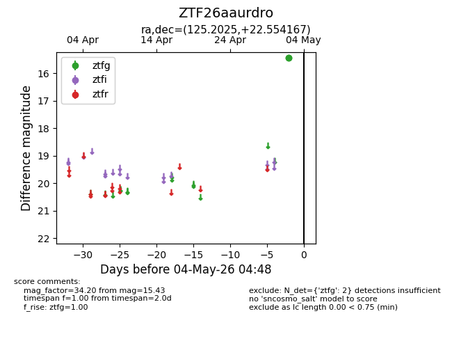
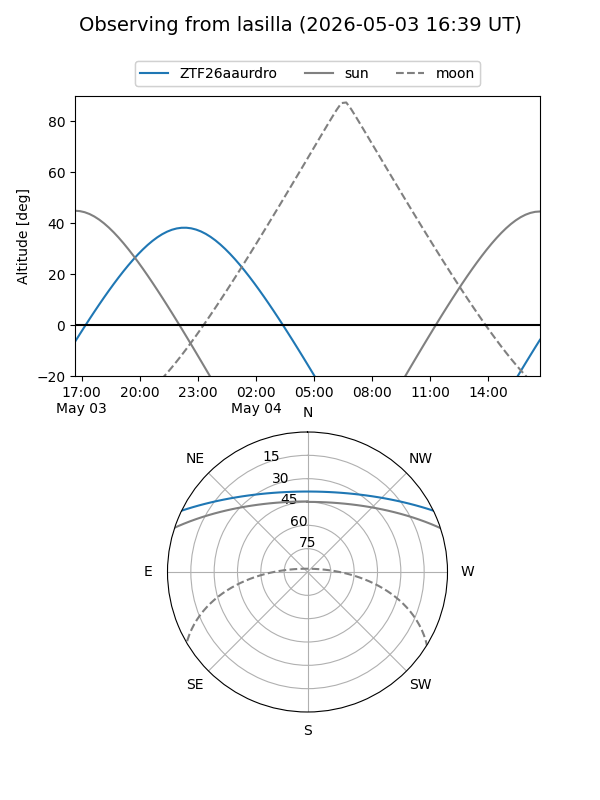
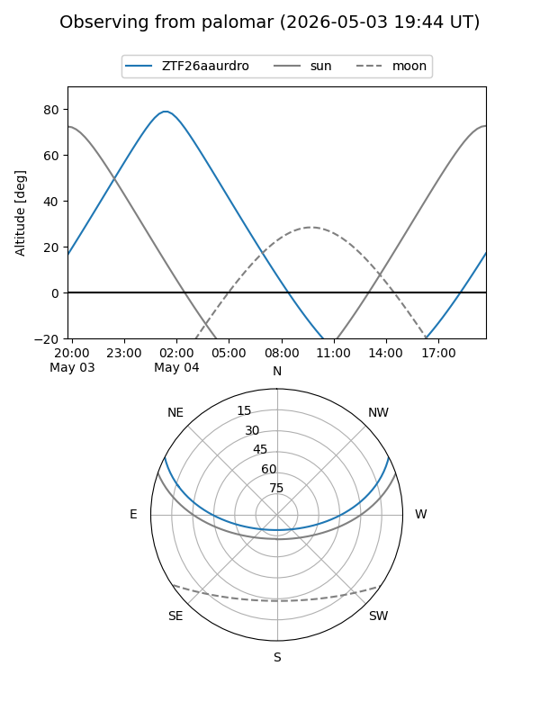

ZTF26aaurdro
Target ZTF26aaurdro at 2026-05-04 05:04
Aliases and brokers:
FINK: link
Lasair: link
ALeRCE: link
alt names
ZTF26aaurdro (ztf,fink_ztf)
Coordinates:
equatorial (ra, dec) = 125.2025,+22.55417
equatorial (HMS+DMS) = 08:20:48.60,+22:33:15.00
galactic (l, b) = (200.9503,+29.16650)
Flags:
Photometry:
last ztfg=15.43
2 ztfg detections
Lightcurve

Visibility


Additional plots